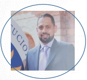

MANUEL GUILLERMO MONZON SANCHEZ

CC: 1'222.329.150
321 697-79-21
manuel.1286@hotmail.com
Lugar de residencia :Bogota D.C
Enviar mensaje por correo
PERFIL
Soy ingeniero electrónico especialista en Gestión de redes de datos. Cuento con alto grado de compromiso y destreza en manejo de Proyectos.Mi experiencia me ha llevado adquirir
destrezas en manejo personal,herramientas para la gestión y optimizacion de proyectos.
Tengo excelente desempeño y habilidades para trabajo en equipo, el conocimiento adquirido me permite aportar soluciones a los diferentes escenarios a nivel socioeconómico y
administrativo.
LOGROS
Instalación y puesta en servicio de más de 8000 equipos, entre los cuales se instalaron sistemas de CCTV, Controles de Acceso, Sistemas de Comunicación, Sistemas de Respaldo Eléctrico.
Por medio de la planeación, se logró optimizar la instalación de los equipos, ahorrando un 40% tiempo en costos en la implementación y puesta en marcha del proyecto, el cual ayudo
a integrar el sistema masivo de transporte de la ciudad de Bogotá.
A través de herramientas de ejecución de proyectos logre optimizar los tiempos de atención establecidos entre Recaudo Bogotá S.A.S y TM, para la entrega de puesta en marcha de los dispositivos
migrados en las FI, FII y FII del sistema integrado de transporte.
EXPERIENCIA LABORAL
RECAUDO BOGOTA S.A.S - ACTUAL
Funciones: Supervisar la ejecución de las rutinas de mantenimiento, orientadas al correcto funcionamiento de la plataforma tecnológica del SIRCI (Equipos de Recaudo e Información al Usuario,
Sistemas de Respaldo Eléctrico, Cámaras del Sistema de CCTV, Cableado Eléctrico y Cableado lógico indoor) de la operación de estaciones, Sistemas de Respaldo Eléctrico, Cableado Eléctrico y
Cableado Lógico indoor de los Centros de Control y Data Center de TransMilenio S.A., Red Externa a cargo de Recaudo Bogotá (Puntos de Personalización y Convenios), Equipos de Fiscalización
y estaciones de monitoreo de CCTV del Centro de Control de TransMilenio S.A.
FICHET COLOMBIA S.A - 2013 – 2014
Funciones: Elaborar propuestas comerciales para la implementación de sistemas de control de acceso vehicular y peatonal en sectores Bancario, transporte masivo y centros educativos, con el fin
de cumplir con todos los requerimientos técnicos a nivel de infraestructura y comunicación, bajo los más altos estándares de seguridad y confiabilidad cumpliendo con los requerimientos y necesidades
del usuario final.
IDIOMA
Español: Nativo
Inglés: Básico
HABILIDADES
Realizar planes de mantenimiento de la plataforma tecnológica a Nivel de HW (Hardware) / SW (software), garantizando los tiempos de servicio y clasificando las solicitudes según su nivel de impacto.
Autoaprendizaje para guiar al equipo de trabajo y llevar a buenos términos los proyectos encomendados
Alta destreza en Comunicación oral para expresar correctamente las ideas, opiniones, proyectos y obstáculos que se presenten en los mismos, para gestionar la toma de decisiones.
Implementar estrategias a través de cronogramas que permitan visualizar el estado del proyecto.
realizar analisis de datos con el propósito de sacar conclusiones sobre la información para poder tomar decisiones, o simplemente ampliar los conocimientos sobre diversos temas.
FORMACIÓN ACADÉMICA
Especialización En Gestión de redes de datos-Universidad Santo tomas año 2020
Ingeniería Electrónica-Universidad Central 2013
Técnico en Instalaciones eléctricas industriales y residenciales-Sena 2010
Diplomado Cableado estructurado-2014
ENTRENAMIENTOS PROFESIONALES
Controles y Automatismos, Schneider Electric
Curso de Fundamentos en Amazon y Python Universidad Santo Tomás, 2020
PLC Controlador lógico programable, Schneider Electric
Curso especial en básico operativo trabajo seguro en alturas, Sena 2014
Fomentar prácticas seguras y saludables en los ambientes de trabajo en el marco de los principios de autocuidado y normatividad legal vigente Sena, 2020
Curso de NDG Linux Unhatched en Cisco Networking Academy.2021
Certificación Scrum Foundation
Diplomado CCNAv7-Cisco-EUD 2021
REFERENCIAS FAMILIARES
Carlos Blanco-Ingeniero Eléctrico-3118383557
Patricia Sánchez-Gerente de Proyectos. Stefanini-3105596411
REFERENCIAS LABORALES
Sergio Rojas-Ing. Soporte y mantenimiento-3102572534
Vladimir Ladino-Coordinador de soporte técnico-3002141993
Perfil de Linkedln
Whatsapp